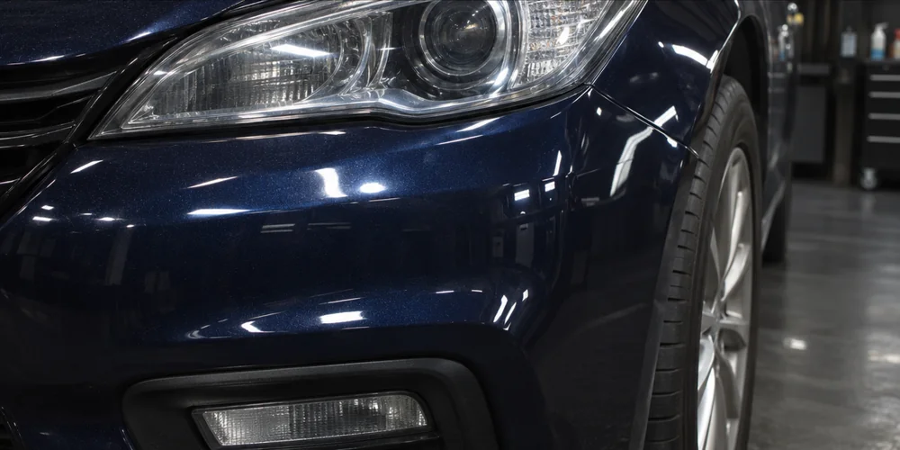
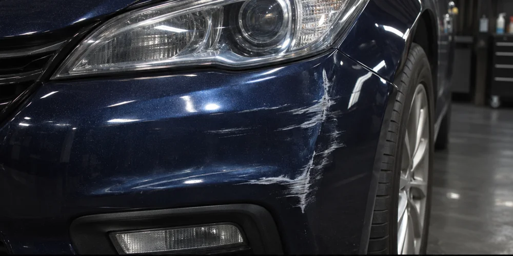

Тонировка стёкол
Вариант тонировки подбирается под автомобиль и нужные стёкла.
Автомастерская
Тонировка стёкол, покраска и полировка деталей, ремонт бамперов и восстановление пластика.
Иллюстрация для демо
01 / Услуги
Вариант тонировки подбирается под автомобиль и нужные стёкла.
Восстановление повреждённых пластиковых деталей и подготовка к покраске.
Покраска деталей, покрытие лаком и полировка поверхности.
02 / Сравнение
Сдвиньте ползунок, чтобы сравнить повреждённый и восстановленный бампер. В демо показана иллюстрация.


ДоПосле03 / Первый шаг
Здесь появятся телефон, мессенджер и адрес мастерской после согласования. Порядок оценки по фото уточняется.
Вернуться наверх ↑